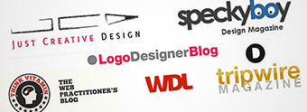

Branding tells the customers what they may expect from your products and services and how you have differentiated your products and services from the rest of your competitors. And here, we will share 5 useful tips that will help you in designing brand identity.
The establishment of your brand is the logo that you select. It should communicate with your brand very well. Along with it your website, business cards, other promotional materials and packaging should also incorporate your logo. Having decided the name you need to give a graphic image of that name to make it stick in the customers mind. A powerful logo design should be attractive, memorable and most importantly, easy to read. It should also have a distinct bold design, appropriate graphic imagery that would work with your company name, the fonts should be clearly visible and the logo should look good both in color and also in black and white.
Another tip for your branding design is a suitable tag line. It is a short phrase consisting of three to seven words expressing what your company is working on its most important benefits. In fact the tag line should be such so that it lingers in the customer’s mind about what your company offers to them. To create a perfect image for your company a distinctive tag line and great logo are critical in creating a brand that leaves the customers thinking about you.
To design a brand identity, you must also consider emotion as another factor. Your site should evoke favorable feelings and emotions in the people when they visit your site. Crafting the basic principles of your site should not mainly deal with the latest trends but on the ideas and emotions that you want your brand to envisage and then start working on the design that you planned. Another considerable factor for designing your brand is consistency.
To create a successful brand, it has to be memorable. To prove that you have made the right choices earlier about selecting the right personality for your brand, you need to be consistent throughout your web design. To ensure that your website casts a uniform image there should be consistent visuals, colors and typography throughout. When a customer visits your site for the first time they may take a few minutes to familiarize themselves. A clear and concise proposition value helps your visitor to overcome several questions such as if this is the right site, does it look interesting, what does it deal with and so on. In short it should explain the benefits your site will let them provide and also why they should keep visiting it..
You may get all the above elements right but another important thing to be considered is the brand’s uniqueness. A little bit of extra effort in creating a unique image will make it stand out from the competitors. You’ll be more memorable and that will make it more likely that your visitors come back for more.
Source: www.ibrandstudio.com